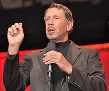

Larry Ellison was born in New York City, to an unwed Jewish mother. His biological father was an Italian American United States Army Air Corps pilot. After Ellison contracted pneumonia at the age of nine months, his mother gave him to her aunt and uncle for adoption.He did not meet his biological mother again until he was 48.
Ellison moved to Chicago's South Shore, a middle-class neighborhood. He remembers his adoptive mother as warm and loving, in contrast to his austere, unsupportive, and often distant adoptive father, who adopted the name Ellison to honor his point of entry into the United States, Ellis Island. Louis Ellison was a government employee who had made a small fortune in Chicago real estate, only to lose it during the Great Depression.
Although Ellison was raised in a Reform Jewish home by his adoptive parents, who attended synagogue regularly, he remained a religious skeptic. Ellison states: "While I think I am religious in one sense, the particular dogmas of Judaism are not dogmas I subscribe to. I don't believe that they are real. They're interesting stories. They're interesting mythology, and I certainly respect people who believe these are literally true, but I don't. I see no evidence for this stuff." At age thirteen, Ellison refused to have a bar mitzvahcelebration.[10] Ellison says that his love affair with Israel is not connected to religious sentiments, but rather due to the innovative spirit of Israelis in the technology sector.
Ellison left the University of Illinois at Urbana–Champaign after his second year, not taking his final exams, because his adoptive mother had just died. After spending a summer in Northern California, he attended the University of Chicago for one term, where he first encountered computer design. In 1966, aged 22, he moved to Northern California.
Ellison has been married and divorced four times.
Ellison made a brief cameo appearance in the 2010 movie Iron Man 2. In 2010, Ellison purchased a 50% share of the BNP Paribas Open tennis tournament. Ellison owns many exotic cars, including an Audi R8 and a McLaren F1. His favorite is the Acura NSX, which he was known to give as gifts each year during its production.Ellison is also reportedly the owner of a Lexus LFA and a Lexus LS600hL
Ellison was critical of NSA whistle-blower Edward Snowden, saying that "Snowden had yet to identify a single person who had been 'wrongly injured' by the NSA’s data collection." He has donated to both Democratic and Republican politicians,and in late 2014 hosted Republican Senator Rand Paul at a fundraiser at his home.
Ellison is one of the top donors to Conservative Solutions PAC, a super PAC supporting Marco Rubio's 2016 presidential bid. As of February 2016, Ellison had given $4 million overall to the PAC